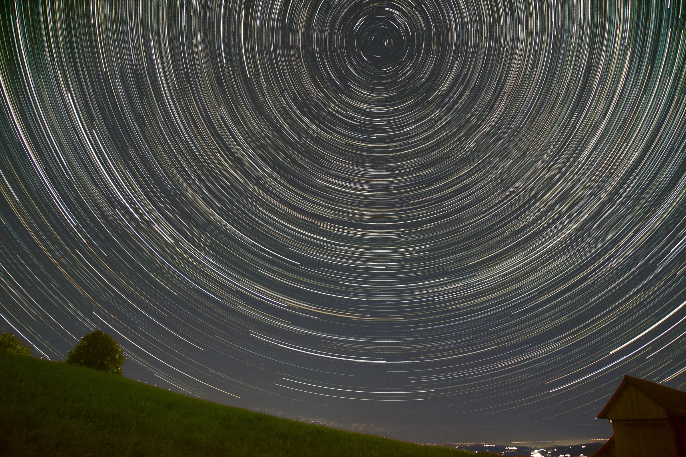
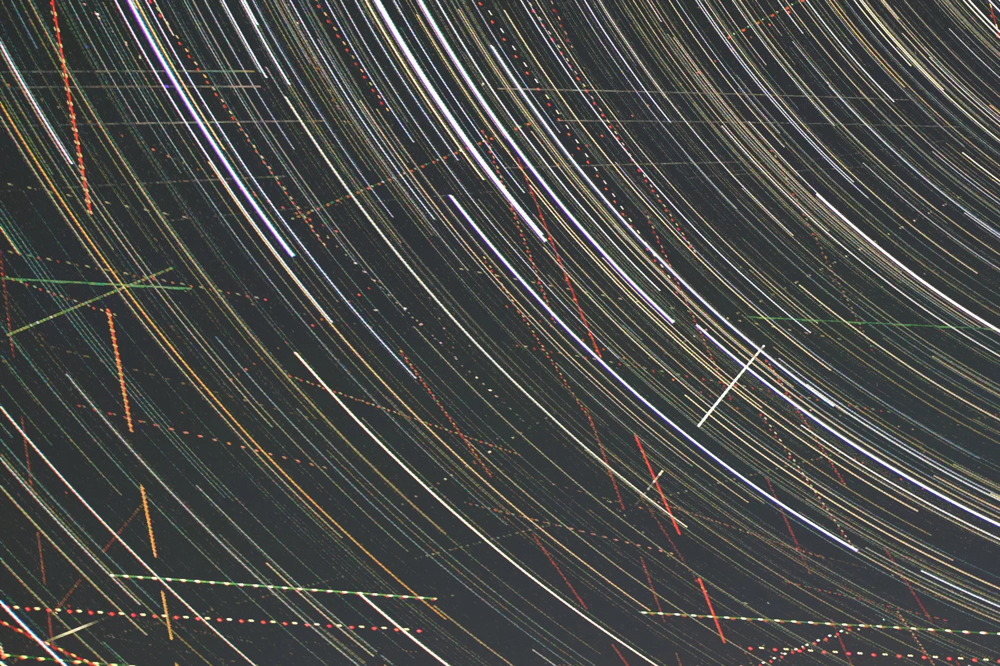
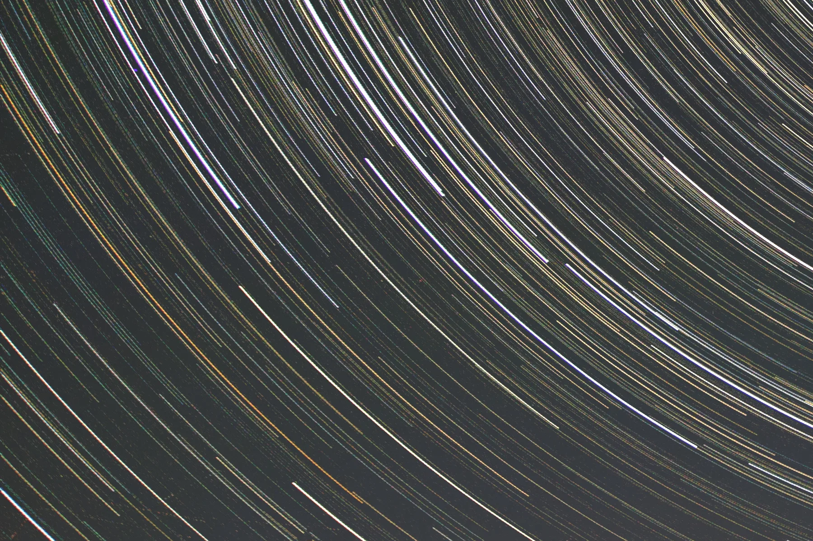
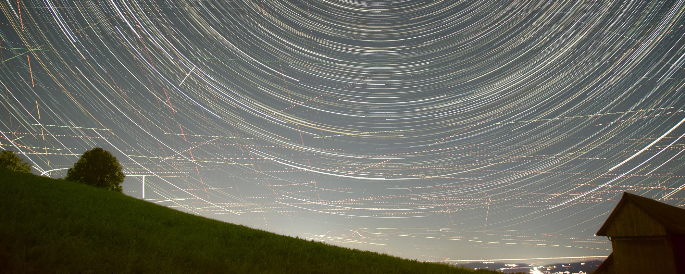
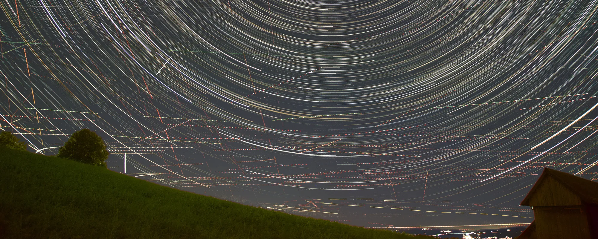
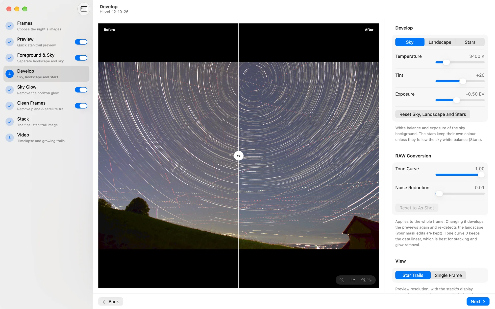

Star-trail images, automated.
Star Trail Stacker turns a night of sky photos into a finished star-trail image. It removes planes, satellites and the glow of nearby towns for you, and guides you through the rest.
From folder to final image
One night. 161 photos. One picture.
Open the folder from your camera. Star Trail Stacker picks the night’s frames, cleans them and stacks them into one image. It also makes a timelapse, and a video of the trails growing across the sky.
The growing-trails video, made by the app from 161 photos taken between 18:57 and 20:44 above Hirzel, Switzerland.
What it does for you
The hours of retouching, done for you.
Stacking star trails by hand means hours in a photo editor: lining up layers, painting out every plane and satellite, masking the horizon. Drag the sliders to see what Star Trail Stacker does on its own.
Planes and satellites, gone.
On this night they crossed the sky in 141 of the 161 photos. Star Trail Stacker finds them in every photo and fills in the sky from the neighbouring photos.
Nothing is painted in by hand, and you can check every removed trail.


The city’s glow, removed.
Light from nearby towns turns the horizon orange. Star Trail Stacker separates the landscape from the sky, removes the glow and keeps the stars.


Guided, step by step
Every step does its work, then shows you the result.
Follow the steps in the sidebar. Adjust what you like, or just click Next. You can always go back and change something.

Frames
Picks the night’s photos and leaves out test shots and frames taken after the camera was bumped.
AUTOMATICPreview
A quick star-trail preview of the whole night.
AUTOMATICForeground & Sky
Separates the landscape from the sky. Fix any spot with a brush.
AUTOMATICDevelop
White balance and exposure for the sky, the landscape and the stars, each on its own.
Sky Glow
Removes the glow of nearby towns and keeps the stars.
AUTOMATICClean Frames
Finds and removes planes and satellites in every photo.
AUTOMATICStack
Smooth trails and an evenly lit landscape, saved as a 16-bit TIFF and a JPEG.
AUTOMATICVideo
A timelapse and growing trails, for YouTube, Reels or Shorts.
Made for real nights
Details that make the picture.
Stars keep their colour
Develop the sky, the landscape and the stars separately, so the stars stay warm and white under a deep blue sky.
An evenly lit landscape
The landscape comes from the most typical photos of the night, so a car’s headlights sweeping across the hill don’t end up in the picture.
Smooth trails
Star Trail Stacker knows how far the stars moved between photos and fills the short gaps, so the trails don’t look dotted.
Timelapse and growing trails
In the original shape, 16:9, 9:16 for Reels and Shorts, or square, in HD or 4K.
Come back any time
Pause and continue later; finished work is kept. Save a project to return to a night months from now and get the same result.
Star Trail Stacker for Mac
Reads RAW files from most cameras, as well as TIFF and JPEG.